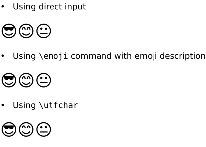
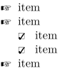
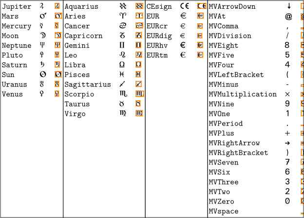

Emoji
It goes without saying that you should use a font that incorporates emojis. On this wiki we can access to DejaVu (Twemoji Mozilla is not incorporated in the distribution).
-
\setupbodyfont[dejavu, sans] \startitemize \head Using direct input \par \scale[scale=2000]{😎😊😐} \head Using \tex{emoji} command with emoji description \par \scale[scale=2000]{\emoji{smiling face with sunglasses}\emoji{smiling face with smiling eyes}\emoji{neutral face}} \head Using \tex{utfchar} \par \scale[scale=2000]{\utfchar{0x1F60E}\utfchar{0x1F60A}\utfchar{0x1F610}} \stopitemize
- 
Symbols
Symbols are named graphical or typographic elements. They can be divided into symbol sets, which gives some namespace independence, as well. You can load the symbol definitions from a symb-bla file with:
\usesymbols[bla]
Given a symbol Snowman defined in a symbolset Weather Symbols in that file, you could typeset the symbol with:
\setupsymbolset [Weather Symbols] \symbol [Snowman]
Or, alternatively, you don't need to load the entire symbolset:
\symbol[Weather Symbols][Snowman]
You can override the existing symbols used at different levels in itemized lists by redefining the existing symbol numbers, with code like the following:
-
\usesymbols[mvs] \definesymbol[1][{\symbol[martinvogel 2][PointingHand]}] \definesymbol[2][{\symbol[martinvogel 2][CheckedBox]}] \startitemize[packed] \item item \item item \startitemize[packed] \item item \item item \stopitemize \item item \stopitemize
- 
Predefined Symbol Sets
(Try \showsymbolset[some set]!)
- cc : Creative Commons logos, set cc
- cow : Cow-TeX logos, sets cownormal and cowcontour
- eur : Adobe Euro (Serif|Sans|Mono), defines the euro symbol (no sets)
- jmn : Janusz M. Nowacki’s navigational symbols (sets navigation 1-4 )
- mis : common bullets (no sets, but default definition for enumerations)
-
mvs
:
Martin Vogel’s Symbols
(sets
astronomic, zodiac, europe, martinvogel 1-2
; replaces LaTeX’s
marvosym) - nav : Hans Hagen’s navigational symbols (sets navigation 1-3 )
-
was
: Roland Waldi’s symbols (sets
wasy general, music, astronomy, astrology, geometry
; replaces LaTeX’s
wasysym)
-
\usesymbols[mvs] \bTABLE \bTR \bTD\showsymbolset[astronomic] \eTD \bTD\showsymbolset[zodiac] \eTD \bTD\showsymbolset[europe] \eTD \bTD\showsymbolset[martinvogel 1] \eTD \eTR \eTABLE
- 
See also
-
Further on emoji
- emoji again from Hans Hagen (2017).
-
Which (free) font contains some symbol?
- comprehensive list of symbols in TeX fonts
- Unicode slots of symbols
- handy UTF-8 list
- txfonts from the LaTeX package txfonts
- The commands in category Commands/Symbols .
- Create your symbol with Symbolset